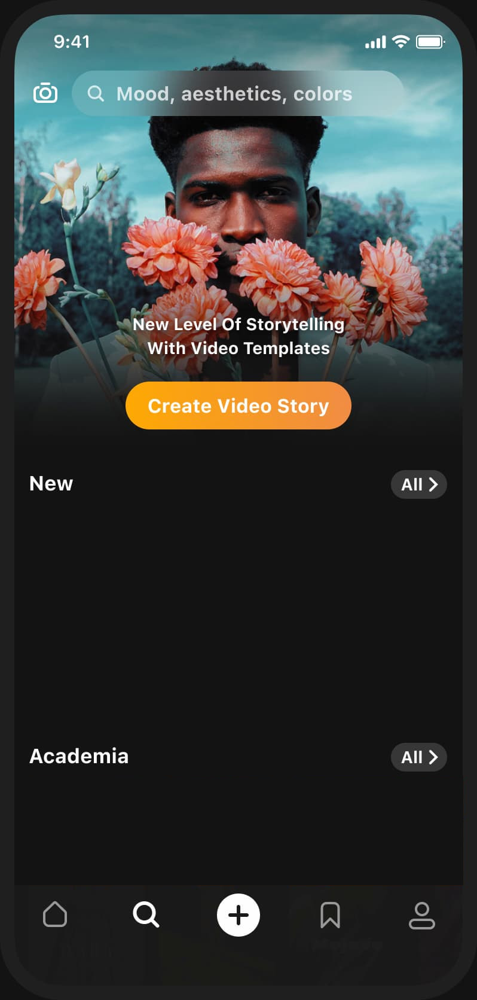

周末扫街的那卷"胶片"——我是怎么在 Prequel 里把老街拍成老照片的
一个普通上班族的周末扫街故事：从拍了一堆灰蒙蒙的老街照片，到用 Prequel 的 Vintage 滤镜和 Grain 颗粒调出一卷"老胶片"，中间还踩了特效下载的坑。
上周六下午三点，我扛着一台五年前的微单，在城南那条青石板老街上来回晃。
阳光斜斜地打在骑楼的雕花窗沿上，卖糖水的阿婆把玻璃罐子摆到店门口晾。我拍了大概两百张，直到电池警告跳出来才收手。回家导到手机里一看——画面干净是干净，但就是那种"手机随手拍也这味儿"的干净。老街该有的那种年月感，一张都没出来。
我翻了三个修图 App，每张都调了十分钟，饱和度拉低、对比度降下来、暗角叠上一层……出来的东西要么像加了灰滤镜，要么颜色假得像淘宝详情页。朋友在旁边刷抖音，抬头瞟了一眼说：你试试 Prequel 啊？那个 Vintage 滤镜一套上去就有老照片那味儿。
我之前确实没听说过这个 App。它的官网上有一份挺详细的功能列表——Prequel 本质上是一个主打特效和滤镜的修图工具，特效库里面有 Prism 棱镜色散、VHS 旧录像带、Glitch 故障风这些挺有辨识度的视觉风格，滤镜则是 Vintage 复古这一支做得最扎实。整个界面是卡片式的，选一张照片进来，底部一排滤镜缩略图，点一下就套上了，左右滑调节强度。

下载倒是挺顺——应用商店直接搜 Prequel AI Filter Photo Editor 就能装，全程没碰到什么阻碍。真正的阻碍是第二天。
我那天晚上把老街的照片分成三组，想给每组叠不同的 Vintage 变体：Film Vintage 偏暖黄颗粒重的那一组给骑楼，Warm Vintage 橙粉调的给糖水铺，Cool Vintage 偏青的给阴天没晒到太阳的那几张。结果点开 Film Vintage 的那一刻，加载圈转了足足两分钟，然后弹出来一个灰色的方块——下载失败，稍后重试。
我以为是 WiFi 卡了，切到 5G 再试，还是失败。关掉 App 重开，点开另一个特效，同样的转圈。这时候才意识到不是网络信号那么简单。
后来去prequel文档翻了一下才弄明白。特效库每次打开都要联网拉素材列表，有些特效的素材服务器在境外，VPN 开着反而可能把连接搞崩了——关掉之后换了个节点，下载马上就通了。还有一个坑是缓存，文档里说缓存损坏也会导致下载卡住，清缓存要进手机设置里的应用管理，清除缓存那一项，别点下面那个清除数据，会把登录状态和本地设置一起干掉。我顺手检查了一下存储空间，手机还剩三 G 多，倒是不用删旧特效——文档里提到说至少留一到两 G 就行。
清完缓存重开 Prequel，Film Vintage 这次几秒就下好了。我把骑楼那张照片拖进去，滤镜强度调到 0.5 左右，叠加 Grain 颗粒 0.25——文档里推荐这个区间最自然，不仔细看还真分不出来是真胶片还是手机拍的。暗角我开了中低，边缘压暗但不突兀。那张照片瞬间就"旧"了：青石板缝里长的青苔变成了深绿，墙皮剥落处的颜色变得温润，阳光照在窗台上那道金边，在暖黄滤镜的衬托下像极了我外婆家相册里夹着的那几张八十年代的照片。
糖水铺那张我换了 Warm Vintage，橙粉调打在玻璃罐上，冰糖炖雪梨的黄看起来格外诱人。Cool Vintage 给了阴天拍的巷口，偏青的冷色调把那种湿漉漉的氛围抓得很准。最后我把三张拼图发了朋友圈，底下有人问我是不是用胶片拍的。
其实 Prequel 也不是万能的。那天我想在电脑上修一下大图，搜了一圈发现它根本没有原生的桌面版。下载页说明里提到了三个替代方案：BlueStacks、MEmu 和 NoxPlayer，分别适合不同需求。我装了 BlueStacks，1.5 G 的体积等了一会儿，Google Play 里直接搜 Prequel 就能装进去。但鼠标调滑块确实不如手指精细，修图的时候滚轮倒比拖拽好用。最后还是把照片传回手机上做的收尾。
还有个小遗憾是 Prism 棱镜特效。我在文档里看了效果——高光区域会被分解成彩虹色散，从一个中心向外扩散，逆光人像和玻璃幕墙应该特别好看。那天老街的光线都偏软，没有强烈的高光点，色散中心放哪儿都不太对。文档里说暗调画面用 Prism 效果不明显，得先提亮或者增加高光对比才行。这个特效我打算等下次晴天逆光扫街再试。
后来我在电脑上把那套老照片整理成了一个小相册，每张备注了用了什么滤镜和参数。Prequel 这个 App 最大的优点就是它的滤镜不是靠运气碰出来的——文档里把每个参数的作用和推荐值都列了出来，知道为什么调、调多少合适，出来的东西就不会离谱。
这套资料我放在了三个仓库里同步更新——想直接看源码的去 GitHub 或 Gitee，国内网络不稳的时候换 GitCode 也能找到同样的目录。